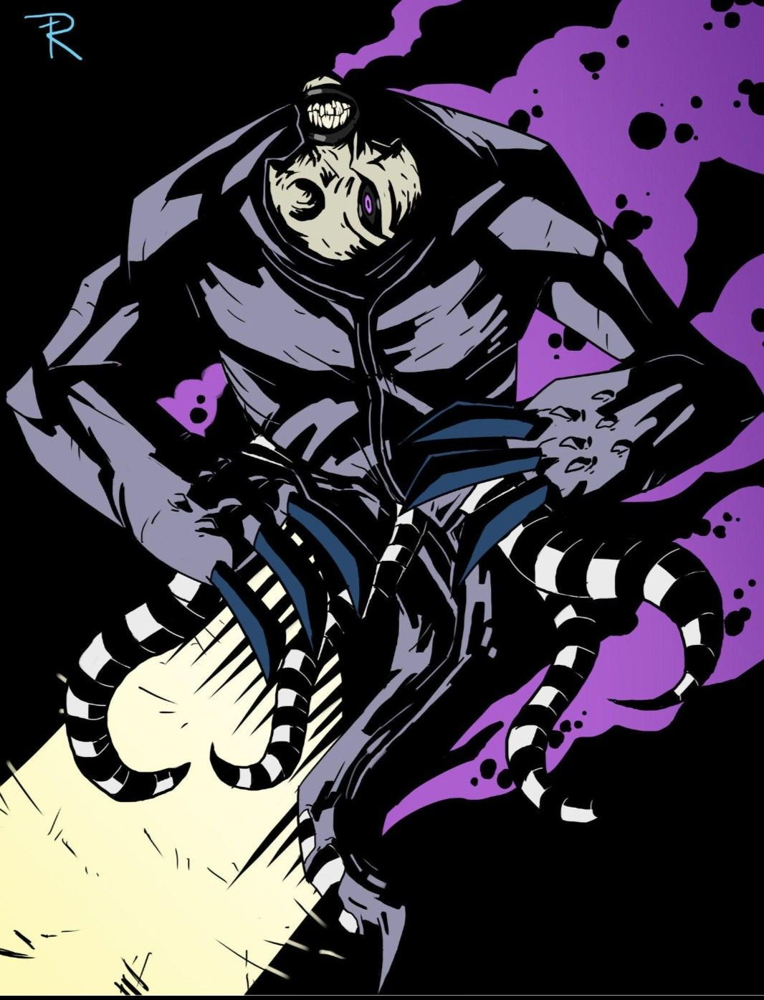

O PESADELO DO PORTADOR
O DNA Ectonurita não é apenas uma transformação; é uma prisão que Ben Tennyson não consegue controlar. Z'Skayr não é um alienígena que Ben se torna, mas uma entidade que vive dentro do relógio, alimentando-se de seus medos mais profundos. A simples presença dele faz a temperatura cair e a sanidade vacilar. O maior medo de Ben não é um vilão externo, é o que vive dentro de si.
